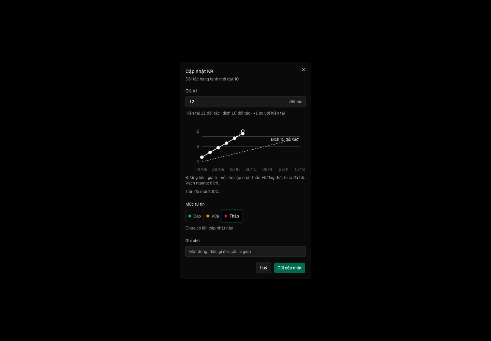

Hôm nay một KR có ba ngăn và một hộp, bấm ở bốn chỗ ra bốn nơi; cập nhật một KR mất 5–6 bấm qua menu «…». Tability: một ngăn KR, «Create check-in» ở đầu, ‹ › sang KR kế — 3 bấm.
docs/superpowers/specs/2026-10-20-ngan-kr-mot-cho-design.md
| Eval | Tiêu chí | Loại | Verdict | run_id | verified_at |
|---|---|---|---|---|---|
| E1 | AC-1 | test | PASS | minted-ngan-kr-mot-cho-E1-r1 | 2026-10-20T10:39:19Z |
| E2 | AC-2 | test | PASS | minted-ngan-kr-mot-cho-E2-r1 | 2026-10-20T10:39:19Z |
| E3 | AC-3 | test | PASS | minted-ngan-kr-mot-cho-E3-r1 | 2026-10-20T10:39:19Z |
| E4 | AC-4 | test | PASS | minted-ngan-kr-mot-cho-E4-r1 | 2026-10-20T10:39:19Z |
| E5 | AC-5 | test | PASS | minted-ngan-kr-mot-cho-E5-r1 | 2026-10-20T10:39:19Z |
| E6 | AC-6 | test | PASS | minted-ngan-kr-mot-cho-E6-r1 | 2026-10-20T10:39:19Z |
| E7 | AC-7 | test | PASS | minted-ngan-kr-mot-cho-E7-r1 | 2026-10-20T10:39:19Z |
| E8 | AC-7 | test | PASS | minted-ngan-kr-mot-cho-E8-r1 | 2026-10-20T10:39:19Z |
| E9 | AC-8 | test | PASS | minted-ngan-kr-mot-cho-E9-r1 | 2026-10-20T10:39:19Z |
| E10 | AC-9 | test | PASS | minted-ngan-kr-mot-cho-E10-r1 | 2026-10-20T10:39:19Z |
| E11 | AC-10 | test | PASS | minted-ngan-kr-mot-cho-E11-r1 | 2026-10-20T10:39:19Z |
| E12 | AC-11 | ui-check | PASS | minted-ngan-kr-mot-cho-E12-r1 | 2026-10-20T10:39:19Z |
| E13 | AC-11 | script | PASS | minted-ngan-kr-mot-cho-E13-r1 | 2026-10-20T10:39:19Z |
AC-1: Given một KR K của mục tiêu M, When bấm vào K ở mỗi lối — dòng KR ở trang đơn vị, nút «Việc» và con số của K
carry-forward tu round 1 — delta khong cham paths cua eval
AC-2: Given ngăn KR của K mở, When ngăn dựng xong, Then đầu ngăn có: tên M là liên kết mở ngăn M; tên K; đếm «n/N»
carry-forward tu round 1 — delta khong cham paths cua eval
AC-3: Given ngăn KR của K, Then thân ngăn có theo thứ tự: ô số «Hiện tại» kèm đích và «Tiến độ» kèm kỳ vọng
carry-forward tu round 1 — delta khong cham paths cua eval
AC-4: Given ngăn KR của K là KR thứ n của M, When bấm «KR kế» (hay «KR trước»), Then chồng ngăn thay đỉnh bằng KR thứ
carry-forward tu round 1 — delta khong cham paths cua eval
AC-5: Given ngăn KR của K và người xem được cập nhật K, When bấm «Cập nhật» ở đầu ngăn, Then hộp cập nhật của K mở với
carry-forward tu round 1 — delta khong cham paths cua eval
AC-6: Given trang đơn vị đang mở M với các KR, When trang dựng, Then mỗi dòng KR mà người xem được cập nhật có nút
carry-forward tu round 1 — delta khong cham paths cua eval
AC-7: (cross-layer) Given trang đơn vị với KR K được cập nhật, When bấm «Cập nhật» trên dòng K (bấm 1), gõ giá trị
carry-forward tu round 1 — delta khong cham paths cua eval
AC-7: (cross-layer) Given trang đơn vị với KR K được cập nhật, When bấm «Cập nhật» trên dòng K (bấm 1), gõ giá trị
carry-forward tu round 1 — delta khong cham paths cua eval
AC-8: Given hộp cập nhật của KR số K mở, When gõ một giá trị hợp lệ, Then đồ thị xem trước trong hộp có các điểm lịch
carry-forward tu round 1 — delta khong cham paths cua eval
AC-9: Given khổ dưới `md`, When mở ngăn KR và trang đơn vị, Then ngăn KR là `Drawer` với cùng đầu ngăn (đếm, ‹ ›,
carry-forward tu round 1 — delta khong cham paths cua eval
AC-10: Given truy vấn ngăn KR đang chạy / hỏng / KR không thấy hay không có quyền / KR đã bỏ hay chu kỳ đã khép, Then
carry-forward tu round 1 — delta khong cham paths cua eval
AC-11: Given bộ OKR mẫu đã nạp, When ở 1440 px từ trang đơn vị cập nhật một KR bằng nút trên dòng, rồi mở ngăn KR từ

carry-forward tu round 1 — delta khong cham paths cua eval
AC-11: Given bộ OKR mẫu đã nạp, When ở 1440 px từ trang đơn vị cập nhật một KR bằng nút trên dòng, rồi mở ngăn KR từ
carry-forward tu round 1 — delta khong cham paths cua eval
| Khối | Tác tử | Token đầu ra |
|---|---|---|
| S4 round 1 | 27 | 49.323 |
| S4 round 2 | 13 | 20.983 |
2 lượt chấm · tổng 70.306 token
chưa gộp vào onehub (nhánh production kho khai)